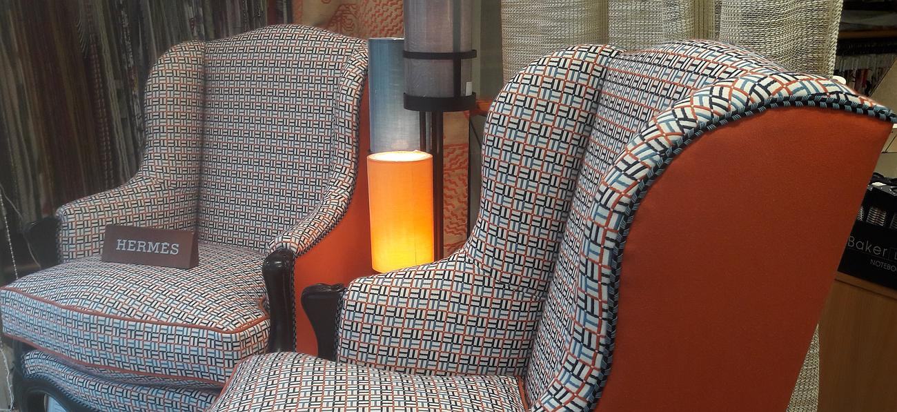
Tapissier d'ameublement · Loire-Atlantique & Morbihan
L'art de la tapisserie, sur mesure
Réfection de sièges d'exception, rideaux, tentures murales et têtes de lit façonnés à la main dans notre atelier de Campbon, entre Nantes et La Baule. Un savoir-faire artisanal transmis depuis 1984.
Notre atelier
Le bonheur ne se fabrique pas en série, il est artisanal
« Confiez-nous votre décoration intérieure. »
Au sein de notre atelier situé à Campbon en Loire-Atlantique, nous concevons et réalisons de nombreuses pièces pour votre décoration intérieure. Nous redonnons vie à vos fauteuils anciens avec des tissus d'exception et fabriquons sur mesure la tête de lit de vos rêves.
Fondé par Michel Denis en 1984, l'atelier perpétue aujourd'hui son savoir-faire aux côtés de l'entreprise familiale Doucet, au service des particuliers, des hôtels et des collectivités.
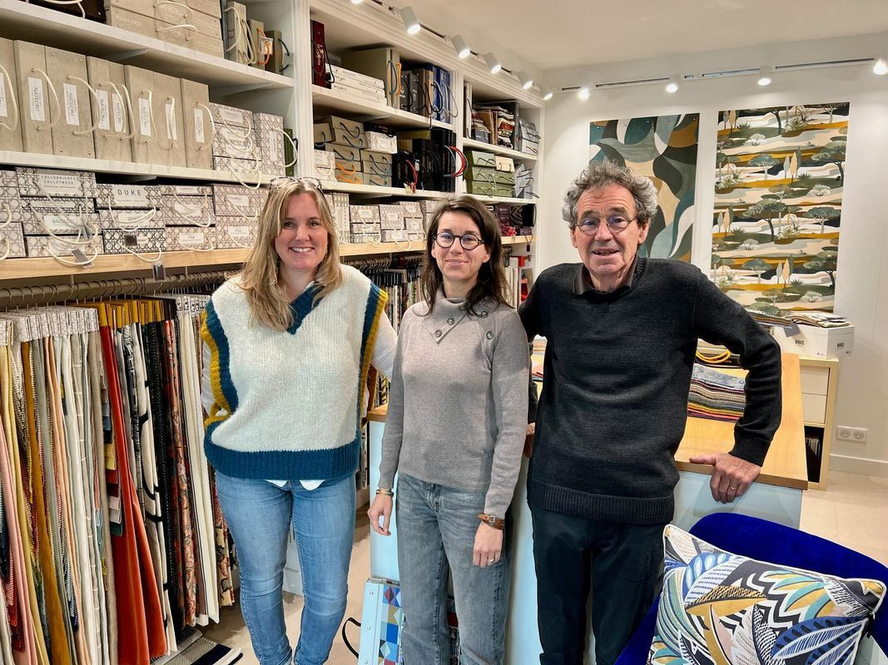
Nos prestations
Un savoir-faire complet pour votre intérieur
Du siège d'époque au canapé contemporain, chaque réalisation est pensée et confectionnée sur mesure dans notre atelier.
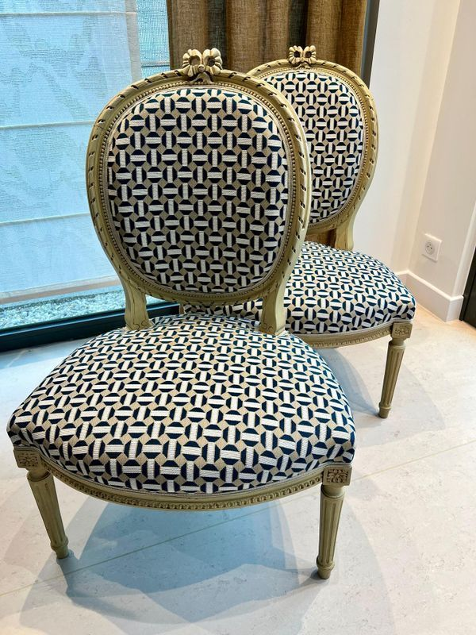
Réfection de fauteuils
Nous mettons vos sièges anciens à nu avant de les habiller d'un nouveau tissu, dans le respect des règles de l'art.
En savoir plus →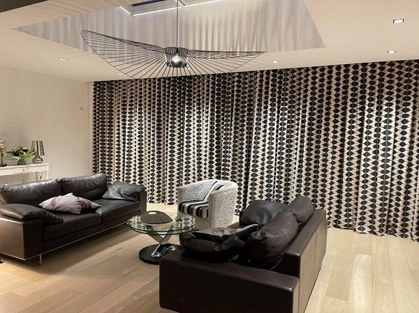
Rideaux & stores
Confection de rideaux, voilages et stores sur mesure, assortis au style de votre habitation et posés à domicile.
En savoir plus →
Tentures murales
Le tissu tendu habille vos murs avec raffinement tout en améliorant l'isolation phonique et thermique.
En savoir plus →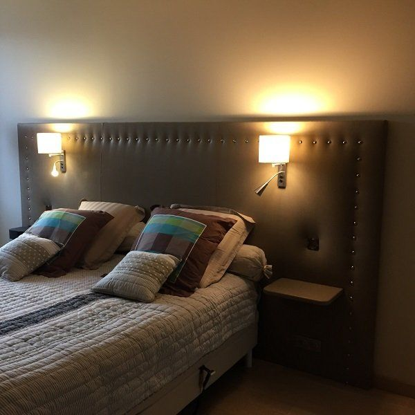
Têtes de lit
Nous fabriquons de A à Z la tête de lit de vos rêves, pour les particuliers comme pour l'hôtellerie haut de gamme.
En savoir plus →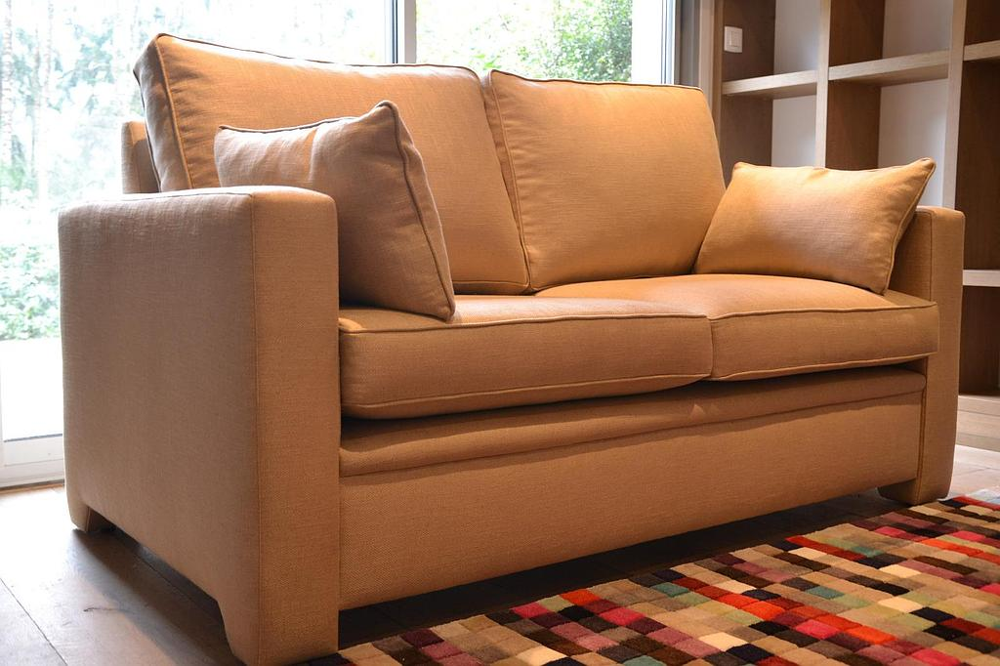
Fabrication de canapé
Un canapé façonné sur mesure dans notre atelier, étape par étape, selon vos dimensions et vos envies.
En savoir plus →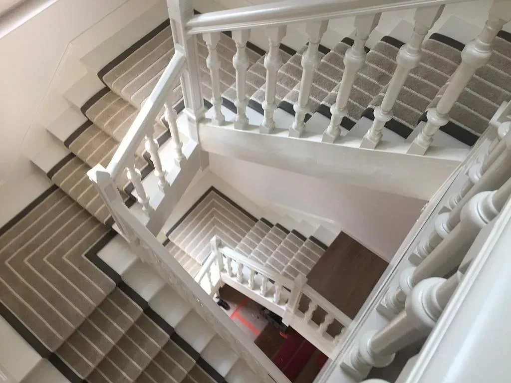
Moquettes & escaliers
Pose de moquettes, tapis et chemins d'escalier adaptés à votre intérieur et à vos passages.
En savoir plus →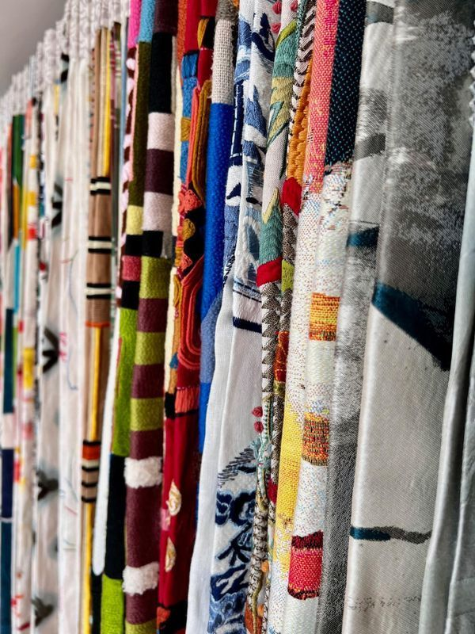
Création sur mesure
Des tissus d'exception, choisis avec vous
Nous réalisons la fabrication de rideaux, stores, banquettes, assises d'extérieur et la pose de tissus tendus. Chaque projet commence par le choix du tissu, parmi plus de 2 000 références des plus belles maisons d'édition.
- Le choix parmi plus de 2 000 références de tissus d'ameublement
- Des conseils personnalisés pour une décoration qui vous ressemble
- La possibilité de nous déplacer dans le Grand Ouest et en région parisienne
Pourquoi nous confier votre projet
L'exigence de l'artisanat, à chaque étape
Diversité
Le choix parmi plus de 2 000 références de tissus d'ameublement.
Conseils
Des conseils personnalisés pour votre décoration d'intérieur sur mesure.
Accompagnement
La qualité des prestations et le sens de l'écoute, du premier échange à la pose.
Suivi
La maîtrise complète de votre projet de décoration d'intérieur.
Mobilité
La possibilité de nous déplacer dans le Grand Ouest et en région parisienne.
Adaptabilité
Des décorations sur mesure pour les particuliers, les hôtels et les collectivités.
Nos réalisations
Quelques pièces sorties de l'atelier
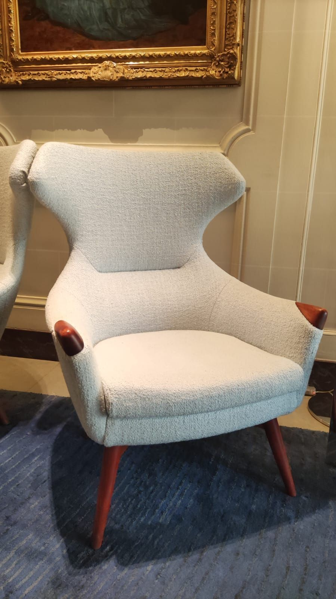
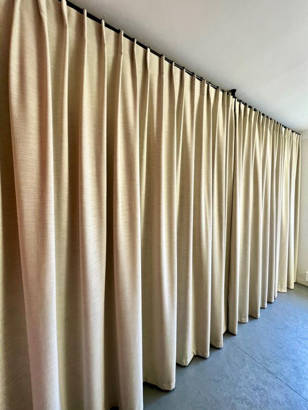

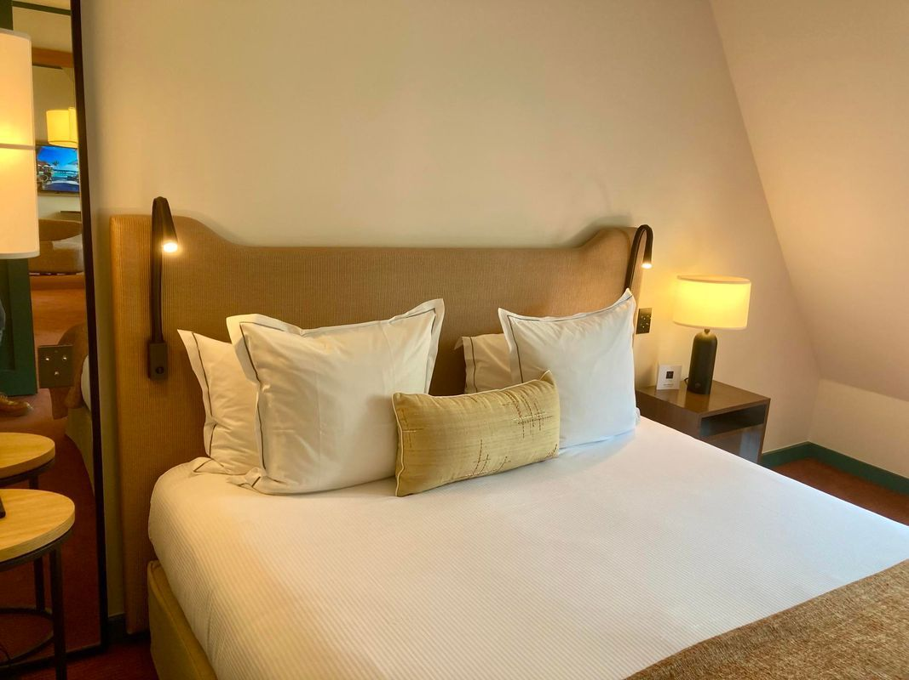
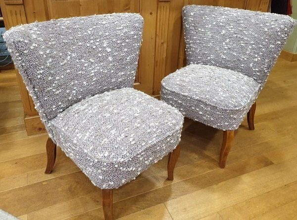
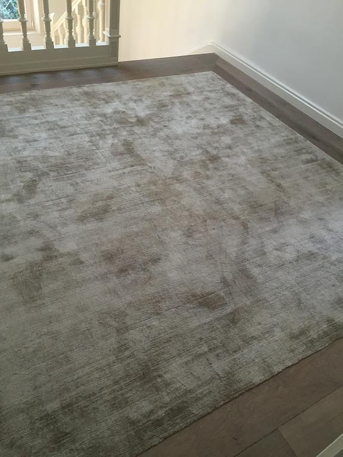
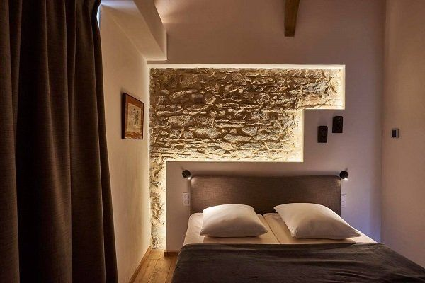
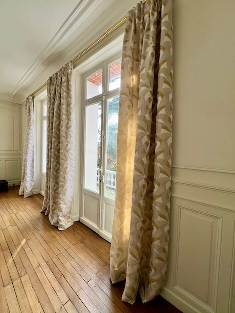
Nos partenaires
Les maisons auxquelles nous faisons confiance
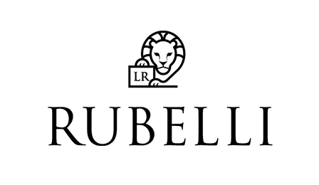
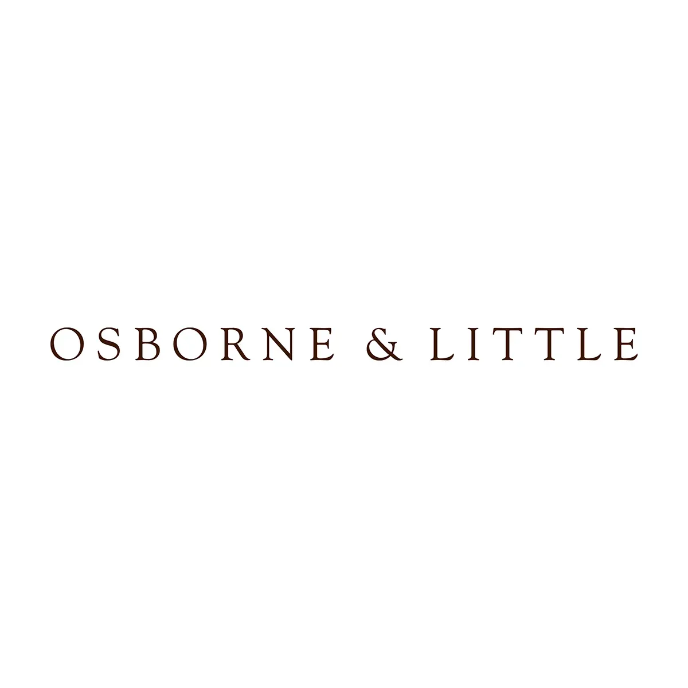
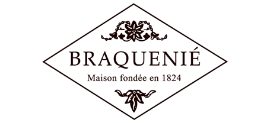
Un projet de décoration ? Parlons-en.
Rendez-vous à notre showroom de Campbon ou contactez-nous pour étudier ensemble votre projet sur mesure.